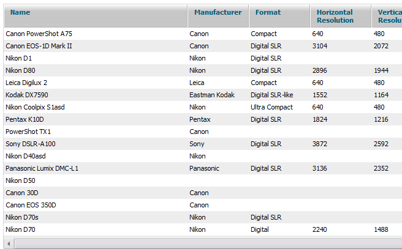

Step Two - Data Loading
When we have the required toolkit in hand, we can get down to practice. As a first step we render grid and populate it with data - prototype.

The initialization code is relatively simple:
Code (javascript):
- create a grid object;
grid = new dhtmlXGridObject(‘for_grid’);
- set columns names;
grid.setHeader("Name,Manufacturer,Format,Horizontal Resolution,Vertical Resolution,Digital zoom, Compressed Formats,Viewfinder type,LCD resolution,Weight (g),Width,Height,Depth,Also known as,Web Link");
- set columns width;
grid.setInitWidths("300,100,100,100,100,100,100,100, 100,100,100,100,100,200,300")
- render grid;
grid.init()
- inform grid that input data has ready-made IDs and there's no need to worry about them;
- ready-made IDs are not typical for CSV|Excel - but we're lucky at this point;
grid.enableCSVAutoID(false)
- set data separator in CSV;
grid.csv.cell=";"
- make grid a little more attractive;
grid.setSkin("modern")
- load data;
grid.load("data.csv","csv");
It's not that the amount of code is small, but there is no useless commands - everything is to the point. Grid is being rendered, data is being loaded, default settings allow to edit it, but everything is done not so quickly.
Initially a file with 1000 lines was used in tests. In the example above it was replaced by a file with 200 lines - using a 300kb file in a post is not very humane - that's why the difference in loading speed is not so notable. Believe my word, the difference will be much more visible in case of 1000 lines.
Now that it can be fixed pretty easily by adding one command to the initializing code:
Code (javascript)
- grid.enableSmartRendering(true)
And we get the same example, but the data is now being rendered nearly instantly - prototype
At a closer look it's obvious that only two lines were changed in the code, one more JS file was added in addition to the command itself.
In case of dhtmlxgrid - more functionality means more included files, in contrast with extJs's approach which initially includes everything in the core.